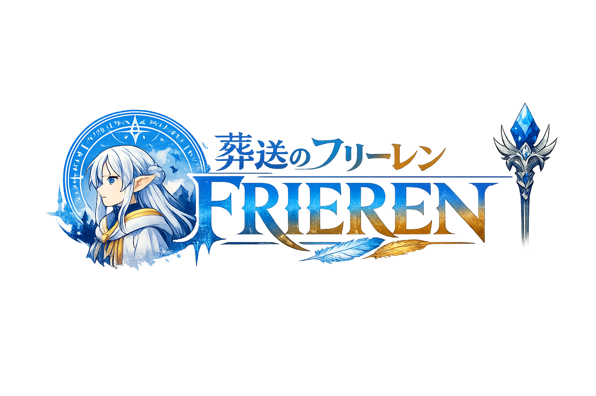
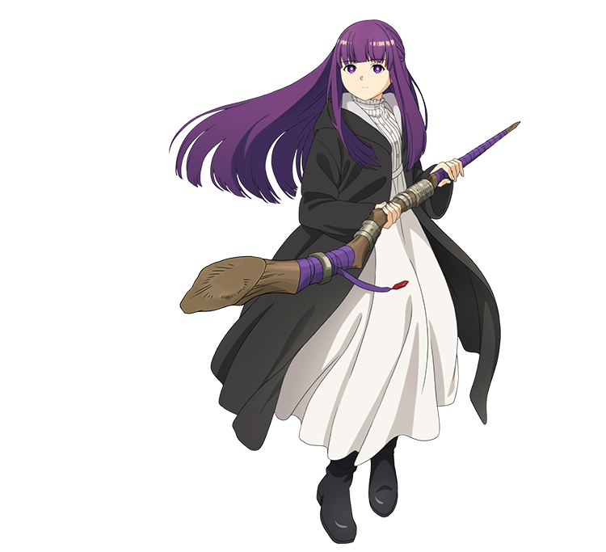

Home
Page 1
Page 2

Fern was raised by Heiter, before Heiter pass away, he asked Fern to join Frieren's journey. Under the teaching of Frieren, Fern are getting stronger and stronger. In this journey, she overcame so many enemies, and she eventually became A-level mage